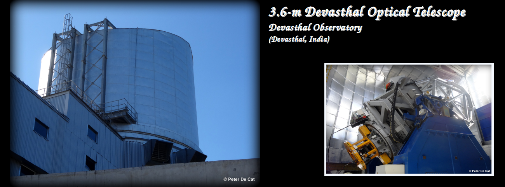

DOT@ARIES
The Devasthal Optical Telescope (DOT) is an innovative optical solar telescope located at ARIES. It is designed to study the solar atmosphere with high-resolution imaging. DOT@ARIES contributes to various international collaborations and solar research projects.
The 3.6m Devasthal Optical Telescope is a custom-built instrument of great complexity. This telescope has the distinction of being largest telescope in India for study of celestial objects at optical wavelengths. It is a national facility installed at Devasthal in the district of Nainital, India. It was commissioned in the year 2016 and is being maintained and operated by ARIES. The 3.6m DOT facility consists of a modern 3.6 meter optical new technology telescope, a suite of instruments, an Aluminium coating plant, a control room and a data center. The back-end instruments of telescope provide spectral and imaging capabilities at visible and near-infrared bands.
| # | Partner Institute | Location |
|---|---|---|
| 1 | ARIES | Aryabhatta Research Institute of Observational Sciences (Nainital, India) |
| 2 | DOT Consortium | Multi-national collaboration including the Netherlands and India |
| 3 | ISRO | Indian Space Research Organisation (India) |
Location Details
| Location | Devashthal Observatory (Devashthal, India) |
|---|---|
| Coordinates | 29°22' North, 79°41' East |
| Altitude | 2540m |
| Type | Optical Ritchey–Chrétien telescope |
| Operated by | ARIES (Nainital, India) |
| Instruments | IMAGER, TIRCAM2, ADFOSC, TANSPEC |
Telescope Time
Form: Online in Dopses
Submission: Online in Dopses
Requirement: 60% for Indian proposals, 33% for ARIES proposals, 7% for Belgian proposals
Observing Cycles
Cycle C1: 1 February - 31 May (proposal deadline: 1 December)
Cycle C2: 1 October - 31 January (proposal deadline: 1 August)
IMAGER
- Wavelengths: 400-900 nm
- Field-of-view: 6.5'x6.5'
- Filters (broad): SDSS u, g, r, i, z; Bessel U, B, V, R, I
TIRCAM2 (TIFR Near Infrared Imaging Camera - II)
- Wavelengths: 1.0-3.7 μm
- Field-of-view: 86.5"x86.5"
- Filters (broad): J, H, K
- Filters (narrow): BrG, K-cont, PHH, nB
ADFOSC (Aries-Devasthal Faint Object Spectrograph & Camera)
- Wavelengths: 350-1050 nm
- Field-of-view: 13.6'x13.6'
- Filters (broad): SDSS u, g, r, i, z
- Filters (narrow): Various widths
- Spectral resolution: 0.1-0.7 nm/pixel
TANSPEC (TIFR-ARIES Near Infrared Spectrometer)
- Wavelengths: 550-2540 nm
- Field-of-view: 1'x1'
- Filters (broad): Y, J, H, K
- Spectral resolution: ~2750 (cross-dispersed), ~100-350 (grism)